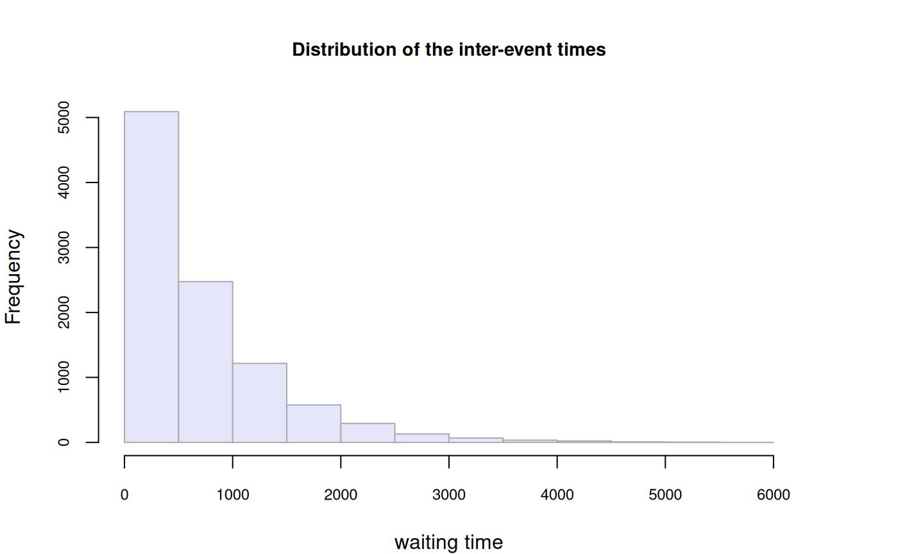
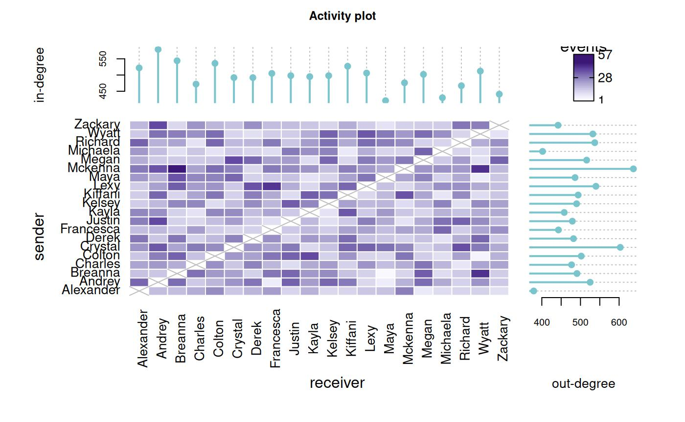
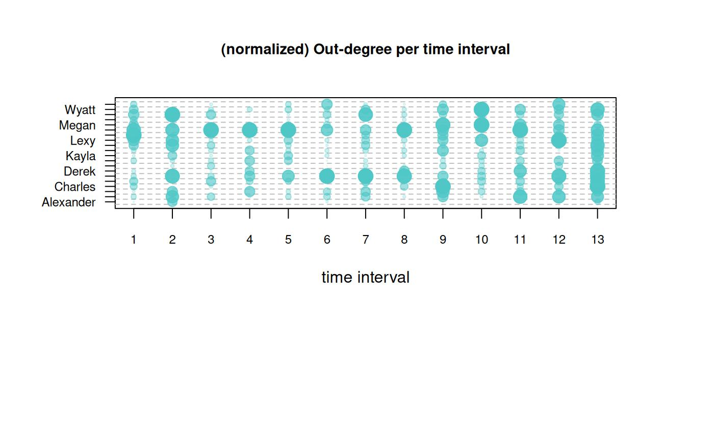

This vignette explains aim, input, output, attributes and methods
of the function remify::remify().
Aim
The objective of remify::remify() is to process raw relational event sequences supplied by the user along with other inputs that characterize the data (actors’ names, event types’ names, starting time point of the event sequence, set of interactions to be excluded from the risk set at specific time points, etc.). The internal routines will process the structure of the input event sequence into a new one, providing also objects that will be used by the packages in ‘remverse’.
As example, we will use the data randomREH
(documentation available via ?randomREH).
library(remify) # loading library
data(randomREH) # loading data
names(randomREH) # objects inside the list 'randomREH'## [1] "edgelist" "actors" "types" "origin" "omit_dyad"Input
Input arguments that can be supplied to remify()
are: edgelist,directed,
ordinal,model, actors,
types, riskset, origin,
omit_dyad and ncores.
edgelist
The edgelist must be a data.frame with three mandatory
columns: the time of the interaction in the first column, and the two
actors forming the dyad in the second and third column. The naming of
the first three columns is not required but the order must be
[time,actor1,actor2]. For directed networks, the second
column of the edgelist will be the column of the sender and the third
column will be the one of the receiver. For undirected network, the
order of second and third column is ignored. Optional columns that can
be supplied are type and weight and they have
to be named accordingly. However, type and weight must be defined after
the third column.
head(randomREH$edgelist)## time actor1 actor2 type
## 1 2020-03-05 01:47:08 Kayla Kiffani competition
## 2 2020-03-05 01:50:18 Colton Justin conflict
## 3 2020-03-05 02:30:26 Kelsey Maya cooperation
## 4 2020-03-05 02:38:50 Alexander Colton competition
## 5 2020-03-05 02:56:16 Wyatt Kelsey conflict
## 6 2020-03-05 03:06:45 Derek Breanna competitiondirected
It is a logical TRUE/FALSE value,
indicating whether events are directed (TRUE) or not
(FALSE). If FALSE, dyads will be sorted
according to their names by following an alphanumeric order
(e.g. [actor1,actor2] = ["Colton","Alexander"] will become
[actor1,actor2] = ["Alexander","Colton"]).
ordinal
It is a logical TRUE/FALSE value,
indicating whether only the order of events matters in the model (when
TRUE) or also the waiting times between event must be taken
into account (when FALSE). Based on the value of this
argument, the processing of the time variable is carried out differently
and the remstimate package will use either the
ordinal (if ordinal is TRUE) or the
interval (if ordinal is FALSE) time
likelihood.
model
Whether the model of interest is tie-oriented or actor-oriented, the
argument model can be specified either as
"tie" or as "actor". This argument affects the
structure of the output as to the risk set: in the case of an
actor-oriented model with changing risk set, the processed risk set will
consist of two objects, senders’ and dyads’ risk sets, in a tie-oriented
modeling, the output risk set will consist of only the riskset on the
dyads. If no dynamic risk set is defined
(omit_dyad = NULL), the argument model won’t
affect the processing of the event sequence.
actors
It is the vector of actor names (if left unspecified, names will be
taken from the input edgelist). Their data type can be
either numeric or character. In the
randomREH data, a vector of actor names is provided.
randomREH$actors## [1] "Crystal" "Colton" "Lexy" "Kelsey" "Michaela" "Zackary"
## [7] "Richard" "Maya" "Wyatt" "Kiffani" "Alexander" "Kayla"
## [13] "Derek" "Justin" "Andrey" "Francesca" "Megan" "Mckenna"
## [19] "Charles" "Breanna"This argument is useful especially when the user wants to include
actors that could interact during the study but didn’t actually take
part in any interaction. Therefore, by not including their names via the
argument actors will exclude them from the risk set.
types
It is the vector of type names (if left unspecified, names will be
taken from the input edgelist). The data type can be either
numeric or character. In the
randomREH data a vector of types is provided.
randomREH$types## [1] "conflict" "competition" "cooperation"riskset
The riskset argument specifies the type of risk set that
should be used for the input data. It can assume three different values:
"full", "active" and "manual"
(with "full" being the default value). The risk set is
"full", if all the possible dyadic interactions given the
number of actors in the network should be considered at risk throughout
the event sequence. The risk set is "active", if it is only
made of only the observed dyadic interactions and it assumed that they
are the only dyads at risk for the entire event sequence. Finally, the
risk set is "manual", if it has a time-varying structure,
that is, when one or more actors should be excluded from the network
until a specific time point because the join the network later, or vice
versa, when one or more actors should be excluded from the risk set from
a time point and on because they leave the network before the end of the
sequence. In other words, a manual risk set is defined whenever one or
more dyadic interactions cannot occur during one or more timespans. If
the riskset argument is "manual", then the
user should supply a list object with the risk set modifications to the
omit_dyad argument. More details about risk set definitions
are provided in
vignette(topic = "riskset", package = "remify").
origin
The initial time
()
of an event sequence is the time at which the network of actors starts
being observed and any event occurring from that time point and on is
annotated. This information is not always known and it depends on the
study design. If the
of an event sequence is known, it can be specified by the argument
origin and it must have the same class of the
time column in the input edgelist. If the
argument is left unspecified (NULL), it will be set by
default to one time unit earlier than
(time of the first observed event). For instance, when the waiting time
is measured in seconds then
, when the waiting time is measured in days then
and so forth. In the randomREH data a
is provided.
randomREH$origin## [1] "2020-03-05 01:32:53 UTC"omit_dyad
This argument is required when riskset="manual",
therefore one or more dyads must be omitted from the risk set for
specific time windows (e.g. an actor drops out of the network, specific
groups of actors cannot interact anymore starting from some time point).
The omit_dyad input is a list of lists. Each list refers to
one risk set modification and must have two objects: a
data.frame called dyad, where dyads to be
remove are specified by row in the format
actor1, actor2, type, and time which is a
vector of two values defining the first and last time point of the time
window in which such dyads couldn’t occur. Consider the example on the
randomREH data. For instance, we want to modify (shrink)
the risk set according to two changes that apply on different time
intervals:
- an event type
conflictthat cannot be observed since a specific time point until the end of the observation period.
randomREH$omit_dyad[[1]]$time # start and stop time point defining the time window of interest## [1] "2020-05-07 20:42:38 UTC" "2020-05-23 21:46:41 UTC"
randomREH$omit_dyad[[1]]$dyad # dyads to be removed from the time points defined by the interval in `time`## actor1 actor2 type
## 1 NA NA conflict- two actors
MichaelaandZackarythat cannot interact with anybody else after a specific time point until the last observed time point.
randomREH$omit_dyad[[2]]$time # start and stop time point defining the time window of interest## [1] "2020-05-19 23:30:09 UTC" "2020-05-23 21:46:41 UTC"
randomREH$omit_dyad[[2]]$dyad # dyads to be removed from the time points defined by the interval in `time`## actor1 actor2 type
## 1 Michaela <NA> NA
## 2 <NA> Michaela NA
## 3 Zackary <NA> NA
## 4 <NA> Zackary NAThe object dyad will give instructions such that the
function will remove from the risk set at the indicated time windows all
the events where: (1) type is conflict, (2)
Michaela and `Zackary are senders or receivers
of a relational event.
The <NA> values mean that all the actors/types are
considered in that field. Indeed, in the first change where we needed to
remove all the events where conflict was the type, we did
it by leaving both actor1 and actor2
unspecified <NA>. Therefore, every time one field
among (actor1,actor2,type) is
left undefined, the omission from the risk set applies to all the
possible values of that field.
Furthermore, the internal routines in remify::remify(),
given the dyads specified via the omit_dyad input, always
operate a shrinkage of the risk set starting from the “full”
risk set (all the possible dyads given the number of actors and
information about directed/undirected events). Therefore, the dyads
described in the omit_dyad list must be based on the
observed set of actors (actors from the event sequence) and on the input
vector of actors (supplied via the argument actors). If the
user wants to add a set of actors to the risk set for a
specific timespan, this can be done by: first making sure that the names
of such actors are found either in the input edgelist or
specified in the input actors, then the user can define an
omit_dyad object that specifies the time window(s) in which
that set of actors is not at risk, so that they are at risk only during
a desired time window.
Running the example
edgelist_reh <- remify(edgelist = randomREH$edgelist,
directed = TRUE, # events are directed
ordinal = FALSE, # model with waiting times
model = "tie", # tie-oriented modeling
actors = randomREH$actors,
types = randomREH$types,
riskset = "manual",
origin = randomREH$origin,
omit_dyad = randomREH$omit_dyad)Output
The output of remify() is an S3 object of class
remify and contains the following elements:
names(edgelist_reh)## [1] "M" "N" "C" "D"
## [5] "intereventTime" "edgelist" "omit_dyad"M
M is the number of observed time points. If there are
events occurring at the same time point, then M will count
the number of unique time points and the number of events will be
returned by E (see below). If all events occurred at
different time points, then M will correspond also to the
number of events and E will not be defined.
edgelist_reh$M## [1] 9915E
E is the number of observed events.
remify() returns the number of observed events only if
there are events that occurred at the same time point. If all observed
events occurred at different time points, then remify()
will not return E.
C
C is the number of event types (also referred as the
sentiment of the event) that could be observed in the network. If no
event types are present in the network or only one event type is
defined, then the output object C will be
NULL.
edgelist_reh$C## [1] 3D and activeD
D is the number of possible dyads considering the number
of actors and also the number of event types (if measured). It
represents the largest size of the risk set (full risk set size). The
number of dyads D can change based on whether relational
events are directed or undirected: * if the network is directed,
then
;
* if the network is undirected, then
.
If the input argument riskset is "active",
then in the output object there will also be the number
activeD, which is the size of the active risk set (active
dyads observed in the event history).
edgelist_reh$D## [1] 1140intereventTime
intereventTime is a numeric vector of waiting times
between two subsequent events, that is:
head(edgelist_reh$intereventTime)## [1] 854.6961 189.9698 2408.3461 504.0680 1046.0560 628.0785The vector of waiting times is available only if the sequence is
processed for interval likelihood (ordinal = FALSE). In the
case of ordinal likelihood, intereventTime is NULL.
edgelist
edgelist is a data.frame and consists in
the original input edgelist, with columns
[time,actor1,actor2,type,weight] where events by-row are
re-ordered if the time variable in the input edgelist was not correctly
sorted. If type or weight are not supplied as
input, then the output edgelist will not incude their columns.
head(edgelist_reh$edgelist)## time actor1 actor2 type
## 1 2020-03-05 01:47:08 Kayla Kiffani competition
## 2 2020-03-05 01:50:18 Colton Justin conflict
## 3 2020-03-05 02:30:26 Kelsey Maya cooperation
## 4 2020-03-05 02:38:50 Alexander Colton competition
## 5 2020-03-05 02:56:16 Wyatt Kelsey conflict
## 6 2020-03-05 03:06:45 Derek Breanna competitionomit_dyad
When riskset = "manual", omit_dyad must be
supplied to the processing function, then the output object will contain
the processed list under the same name. In the case of tie-oriented
modeling, the list consists of two objects: a vector named
time and a matrix named riskset.
risksetis a 1/0’s matrix where all the possible risk set modifications are described by row, and the columns identify the dyads ( columns). The number of rows depends on the number of risk set modifications occurring in the event sequence, thus it remains variable (and it is not necessarly the same as the number of risk set modifications declared with the inputomit_dyad, because they can also occur on no/partially/totally overlapping time windows that are processed internally).timeis a vector of row indices that for each time point indicates which modification of the risk set (row index in the matrixriskset) is observed.
edgelist_reh$omit_dyad$riskset[,1:10] # printing out the risk set modifications of only the first 10 columns (dyads). A total number of 2 modifications of the risk set are observed (by row)## [,1] [,2] [,3] [,4] [,5] [,6] [,7] [,8] [,9] [,10]
## [1,] 1 1 1 1 1 1 1 1 1 1
## [2,] 1 1 1 1 1 1 1 1 1 1The processed object omit_dyad (inside any
remify object) will be required by other packages in
‘remverse’. Given that such packages have function written in C++, the
row indices in the vector start at 0 (indicating row 1 in the matrix
above) and they assume value -1 when no risk set alteration is
observed.
edgelist_reh$omit_dyad$time[1:10] # printing out the first 10 time points. We can see that in none of the 10 time points any modification takes place (-1)## [1] -1 -1 -1 -1 -1 -1 -1 -1 -1 -1In the case of actor-oriented modeling with changing risk set, the
omit_dyad output list consists of three objects: a vector
named time (same vector as explained above) and two risk
set matrices (senderRiskset and riskset), one
for the sender and one for the dyads. Both risk set matrices follow the
same structure as the matrix riskset in the tie-oriented
modeling. Whenever omit_dyad is not supplied to
remify() then its output in the remify object
will be empty.
Attributes
Consider now an "active" risk set and process the same
edgelist:
edgelist_reh <- remify(edgelist = randomREH$edgelist,
directed = TRUE, # events are directed
ordinal = FALSE, # model with waiting times
model = "tie", # tie-oriented modeling
actors = randomREH$actors,
types = randomREH$types,
riskset = "active",
origin = randomREH$origin)The attributes of a remify object are:
names(attributes(edgelist_reh))## [1] "names" "class" "with_type" "weighted" "directed"
## [6] "ordinal" "model" "riskset" "dictionary" "origin"
## [11] "ncores" "dyadID" "actor1ID" "actor2ID" "typeID"
## [16] "dyadIDactive"names
names is the vector of the names of the output objects
which are discussed already in section ‘Output’.
attr(edgelist_reh, "names")## [1] "M" "N" "C" "D"
## [5] "intereventTime" "edgelist" "activeD" "omit_dyad"class
The class attribute returns the class name of the
object, that is remify.
attr(edgelist_reh, "class")## [1] "remify"with_type
with_type is a logical
TRUE/FALSE value indicating whether more than
one event type is observed in the network (TRUE) or not
(FALSE).
attr(edgelist_reh, "with_type")## [1] TRUEweighted
weighted is a logical
TRUE/FALSE value indicating whether relational
events have weights (TRUE) or not (FALSE).
attr(edgelist_reh, "weighted")## [1] FALSEdirected
directed is a logical
TRUE/FALSE value indicating whether we know
(TRUE) for each event whom originated the action (sender)
and whom was the target (receiver) of it, or we don’t know
(FALSE) the source and the target of an event but only the
actors that were involved in it.
attr(edgelist_reh, "directed")## [1] TRUEordinal
ordinal is a logical
TRUE/FALSE value indicating whether in the
model we want to consider the waiting times between events
(FALSE) or not and consider only the order of the
relational events (TRUE).
attr(edgelist_reh, "ordinal")## [1] FALSEmodel
model describes whether the output of
remify() is suitable for the actor-oriented model
(model = "actor") or for the tie-oriented model
(model = "tie").
attr(edgelist_reh, "model")## [1] "tie"riskset
riskset returns the type of risk set that was chosen in
the processing of the data. Possible values are: "full",
"manual" and "active".
attr(edgelist_reh, "riskset")## [1] "active"dictionary
dictionary is a list of two data.frame’s:
actors and types.
-
actorshas two columns: the first with actor names (actorName) sorted according to their alphanumerical order, the second with their corresponding ID’s (actorID), ranging from to (with being the number of actors); -
typeshas two columns: the first with type names (typeName) sorted according to their alphanumerical order, the second with their corresponding ID’s (typeID), ranging from to (with being the number of event types);
attr(edgelist_reh, "dictionary")## $actors
## actorName actorID
## 1 Alexander 1
## 2 Andrey 2
## 3 Breanna 3
## 4 Charles 4
## 5 Colton 5
## 6 Crystal 6
## 7 Derek 7
## 8 Francesca 8
## 9 Justin 9
## 10 Kayla 10
## 11 Kelsey 11
## 12 Kiffani 12
## 13 Lexy 13
## 14 Maya 14
## 15 Mckenna 15
## 16 Megan 16
## 17 Michaela 17
## 18 Richard 18
## 19 Wyatt 19
## 20 Zackary 20
##
## $types
## typeName typeID
## 1 competition 1
## 2 conflict 2
## 3 cooperation 3For more details about how the ID is assigned to actors and types,
see
utils::vignette(topic = "riskset", package = "remify")
origin
origin is the value of the input argument with the same
name.
str(attr(edgelist_reh, "origin")) # printing out only the str() of the attribute since the data.frame `value` is large## POSIXct[1:1], format: "2020-03-05 01:32:53"ncores
ncores is the number of threads used in the
parallelization of internal routines in
remify::remify().
attr(edgelist_reh, "ncores")## [1] 1dyadID
dyadID is a list of vectors containing the IDs of the
observed dyads per time point. The IDs range between 1 and
D (edgelist_reh$D). For more details about how
the ID is assigned to a specific triple of
[actor1,actor2,type], see
vignette(topic = "riskset", package = "remify").
attr(edgelist_reh, "dyadID")[[1]] # printing out dyads ID's observed at the first time point## [1] 182actor1ID
actor1ID is a list of vectors containing the IDs of the
observed actor1’s/senders per time point. The IDs range between 1 and
N (edgelist_reh$N).
attr(edgelist_reh, "actor1ID")[[1]] # printing out the actor1's/senders ID's observed at the first time point## [1] 10actor2ID
actor2ID is a list of vectors containing the IDs of the
observed actor2’s/receivers per time point. The IDs range between 1 and
N (edgelist_reh$N).
attr(edgelist_reh, "actor2ID")[[1]] # printing out the actor2's/receivers ID's observed at the first time point## [1] 12typeID
typeID is a list of vectors containing the IDs of the
observed types per time point. The IDs range between 1 and
C (edgelist_reh$C).
attr(edgelist_reh, "typeID")[[1]] # printing out the types ID's observed at the first time point## [1] 1dyadIDactive
dyadIDactive is a list of vectors containing the IDs of
the active set of dyads. This attribute is available only when
riskset = "active".
attr(edgelist_reh, "dyadIDactive")[[1]] # printing out the ID's of the active dyads at the first time point## [1] 182evenly_spaced_interevent_time and indices_simultaneous_events
evenly_spaced_interevent_time is the vector of processed
waiting times when in the relational event sequence two or more events
are observed at the same time point. This attribute will be
NULL when there are no simultaneous events in the sequence.
The evenly spaced interevent time assumes that if two or more events
occurred at the same time, the waiting time since the previous
(different) time point is evenly spread across the simultaneous events.
For instance, if we observe five events at time 10 and the
previous (different) time point is 4, their raw waiting
time will be calculated as below.
time_points <- c(4,10,10,10,10,10)
waiting_times <- diff(time_points) # waiting_times: [1] 6 0 0 0 0 calculated as t[m]-t[m-1]The waiting time of the second event from the first event is
6 (calculated as the difference of the two time points,
10-4=6). The value of the waiting time is 0
for the other events that are simultaneous (i.e. 10-10=0).
In this scenario, remify spreads the waiting time
6 for the five simultaneous events as,
rep(waiting_times[1]/5,5)# 5 is the number of events in the example observed at the same time (10)## [1] 1.2 1.2 1.2 1.2 1.2indices_simultaneous_events is a vector of indices from
the input edgelist indicating which rows of the edgelist
correspond to simultaneous events (excluding the first simultaneous
event). This attribute will be NULL when there are no
simultaneous events in the sequence. Considering the example above, if
there are five simultaneous events at time 10,
remify will return the following set of indices
## [1] 6 0 0 0 0
which(diff(time_points)==0) # indices of simultaneous events, excluding the first simultaneous event ## [1] 2 3 4 5remify, doesn’t remove the first simultaneous event for
each case of two or more simultaneous events in the sequence because
that time point must be processed to group the simultaneous events as
occurred at a specific time point.
# attr(edgelist_reh, "evenly_spaced_interevent_time")
# attr(edgelist_reh, "indices_simultaneous_events")Methods
The available methods for a remify object are:
print, summary, dim,
getRiskset, getActorName,
getTypeName, getDyad, getActorID,
getTypeID, getDyadID and
plot.
print() and summary()
Both print() and summary() print out a
brief summary of the relational network data.
summary(edgelist_reh) # same output as `print(edgelist_reh)` or just `edgelist_reh`## Relational Event Network
## (processed for tie-oriented modeling):
## > events = 9915
## > actors = 20
## > (event) types = 3
## > riskset = active
## >> active dyads = 1130 (full risk set size = 1140 dyads)
## > directed = TRUE
## > ordinal = FALSE
## > weighted = FALSE
## > time length ~ 80 days
## > interevent time
## >> minimum ~ 0.0011 seconds
## >> maximum ~ 5811.4011 secondsdim()
dim() returns some useful dimensions characterizing the
network, such as: number of events, number of actors, number of event
types (omitted in the case of networks with one or no event types),
largest number of possible dyads
()
and, finally, number of active dyads (activeD, showed only
if riskset = "active").
dim(edgelist_reh)## events actors types dyads dyads(active)
## 9915 20 3 1140 1130getRiskset()
If risk set is "active" or "manual", then
getRiskset() returns the processed risk set matrix (or the
two dynamic risk sets if actor-oriented modeling) that are explained in
the ‘Output’ section.
getRiskset(x = edgelist_reh)$riskset[,1:10] # printing out the risk set modifications of only the first 10 columns (dyads). A total number of 2 modifications of the risk set are observed (by row)## [1] 1 1 1 1 1 1 1 1 1 1getActorName()
getActorName(x,actorID): by supplying one or more
actorID’s (between 1 and
edgelist_reh$N) it returns the corresponding (input)
names.
getActorName(x = edgelist_reh, actorID = c(1,13,20))## [1] "Alexander" "Lexy" "Zackary"getTypeName()
getTypeName(x,typeID): by supplying one or more
typeID’s (between 1 and
edgelist_reh$C) it returns the corresponding (input)
names.
getTypeName(x = edgelist_reh, typeID = c(1,3))## [1] "competition" "cooperation"getDyad()
getDyad(x, dyadID, active): by supplying one or more
dyadID’s it returns a data.frame with the dyad
composition as “actor1”, “actor2” and “type” (if type is present). If
active = FALSE, then the method expects that the vector
dyadID consist of ID’s of dyads from the full risk set
(between 1 and edgelist_reh$D). If the risk
set in the processed remify object is "active", then it is
also possible to get the dyad composition from the ID of the active
dyads by declaring the argument active = TRUE and supplying
the vector of ID’s of the active dyads to dyadID (ranging
between 1 and edgelist_reh$activeD).
## dyadID actor1 actor2 type
## 1 1 Alexander Andrey competition
## 2 10 Alexander Kelsey competition
## 3 100 Crystal Colton competitiongetActorID()
getActorID(x,actorName): by supplying one or more
actorName’s it returns the corresponding ID’s.
getActorID(x = edgelist_reh, actorName = c("Michaela","Alexander","Lexy"))## [1] 17 1 13getTypeID()
getTypeID(x,typeName): by supplying one or more
typeName’s (if types are present in the event sequence) it
returns the corresponding ID’s.
getTypeID(x = edgelist_reh, typeName = "cooperation")## [1] 3getDyadID()
getDyadID(x,actor1,actor2,tpye): by supplying a vector
of names as to actor1, actor2 and type it returns the corresponding dyad
ID. The names to supply are the original input names of the edgelist
before the processing.
getDyadID(x = edgelist_reh, actor1 = "Alexander", actor2 = "Charles", type = "cooperation")## dyadID dyadIDactive
## 763 753The method can work with only one input dyad of the form
[actor1,actor2,type]. The
argument type can be left NULL if the sequence
has no event types (attribute "with_type" is
FALSE).
plot()
plot() returns different descriptive plots:
- histogram of the inter-event times
- activity plot, which is a tile plot where the color of the tiles is proportional to the count of the directed (or undirected) dyad. In-degree and out-degree activity line plots are plotted on the sides (or the total-degree on the top side, if the network is undirected).
- for directed networks two plots of normalized out-degree and
in-degree values per actor (ranging in
)
over a set of
n_intervals(evenly spaced). For undirected networks, only one plot of normalized total-degree over then_intervals(also here values ranging in [0,1]). The normalization is calculated in each interval as the for each actor considering minimum and maximum degree (in-, out- or total-, degree) observed in the interval (opacity and size of the points is proportional to the normalized measure) - four plots: (i) number of events (# events) per time interval, (ii)
proportion of observed dyads (# dyads /
x$D) per time interval, (iii) and (iv) (for directed network only) proportion of active senders and receivers per time interval (calculated as # senders/x$Nand # receiver/x$Nper interval) - two networks: (i) network of events where edges are considered undirected (edges’ opacity is proportional to the counts of the undirected events, vertices’ opacity is proportional to the total-degree of the actors), (ii) visualization of directed network (edges’ opacity is proportional to the counts of the directed events, vertices’ opacity is proportional to the in-degree of the actors).
op <- par(no.readonly = TRUE)
par(mai=rep(0.8,4), cex.main=0.9, cex.axis=0.75)
plot(x=edgelist_reh,which=1,n_intervals=13) # histogram of inter-event times
plot(x=edgelist_reh,which=2,n_intervals=13) # tile plot (counts of dyadic events) with in-/out- degree of actors on the sides
plot(x=edgelist_reh,which=3,n_intervals=13) # (normalized) in-degree and out-degree of actors
plot(x=edgelist_reh,which=4,n_intervals=13) # per time interval: number of events, proportion of observed dyads, proportion of active senders and active receivers
plot(x=edgelist_reh,which=5,n_intervals=13,igraph.edge.color="#cfcece",igraph.vertex.color="#7bbfef") # networks
par(op)The plots above slightly vary in the case of undirected networks:
edgelist_reh <- remify(edgelist = randomREH$edgelist,
directed = FALSE, # events are now considered undirected
model = "tie")
#op <- par(no.readonly = TRUE)
#par(mai, rep(0.8,4), cex.main=0.9, cex.axis=0.75)
#plot(x=edgelist_reh,which=1:5,n_intervals=13)
#par(op)